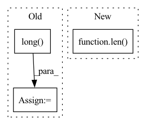

Pattern ID :1112
Before Change
output.append(speaker_embedding)
if return_all_spk_embedding:
random_idx = torch.multinomial(torch.ones(len(self.all_spk_idx)), 100, replacement=False).long() // 100 for experimentally to avoid OOM error
all_speaker_embedding = self.embed_sources(self.all_spk_idx[random_idx]) // (n_training_sources, latent_dim)
output.append(all_speaker_embedding)
After Change
all_spk_embedding = self.embed_sources(self.all_spk_idx) // (n_training_sources, latent_dim)
output.append(all_spk_embedding)
if len( output) == 1:
return output[0]
return tuple(output)In pattern: SUPERPATTERN
Frequency: 5
Non-data size: 3
Instances Fragment ID: 5592292
Project Name: tky823/dnn-based_source_separation
Commit Name: bceeacb692d2f21773f3f8ad7921d5ff890a1403
Time: 2021-11-05
Author: delta9guitar97@gmail.com
File Name: src/models/wavesplit.py
M Class Name: WaveSplit
N Class Name: WaveSplit
M Method Name: forward(9)
N Method Name: forward(9)
M Parent Class: WaveSplitBase
N Parent Class: WaveSplitBase
M File Name: src/models/wavesplit.py
N File Name: src/models/wavesplit.py
M Start Line: 101
M End Line: 116
N Start Line: 159
N End Line: 185
Before Change
number_to_gen = self.eval_generate_num
num_batch = number_to_gen // self.batch_size + 1 if number_to_gen != self.batch_size else 1
samples = torch.zeros(num_batch * self.batch_size, self.max_length).long() // larger than num_samples
fake_sentences = torch.zeros((self.batch_size, self.max_length))
idx2token = eval_data.idx2token
for b in range(num_batch):
leak_sample = self.leakgan_generate(fake_sentences, dis)
assert leak_sample.shape == (self.batch_size, self.max_length)
samples[b * self.batch_size:(b + 1) * self.batch_size, :] = leak_sample
samples = samples[:number_to_gen, :]
samples = samples.tolist()
texts = []
for sen in samples:After Change
fake_sentences = torch.zeros((self.batch_size, self.max_length))
idx2token = eval_data.idx2token
batch_size = len( batch_data["target_text"])
samples = self.leakgan_generate(fake_sentences, dis)
samples = samples[:batch_size]
samples = samples.tolist() Fragment ID: 5592294
Project Name: rucaibox/textbox
Commit Name: fc4878d02e6b0c539d71f89d99fd0af9fe088760
Time: 2021-04-06
Author: 1020139164@qq.com
File Name: textbox/module/Generator/LeakGANGenerator.py
M Class Name: LeakGANGenerator
N Class Name: LeakGANGenerator
M Method Name: generate(4)
N Method Name: generate(3)
M Parent Class: UnconditionalGenerator
N Parent Class: UnconditionalGenerator
M File Name: textbox/module/Generator/LeakGANGenerator.py
N File Name: textbox/module/Generator/LeakGANGenerator.py
M Start Line: 333
M End Line: 345
N Start Line: 329
N End Line: 337
Before Change
out = [(point_features, xyz)] + out
xyz = xyz.unsqueeze(0).contiguous()
indices = furthest_point_sample(xyz, cfg.n_keypoints).squeeze(0).long()
keypoints = points[indices]
keypoints_xyz, keypoints_features = torch.split(keypoints, [3, 1], dim=-1)
voxel_features_i, voxel_coords_i = out[2]
After Change
xyz, point_features = torch.split(points, [3, 1], dim=-1)
keypoints_xyz, keypoints_features = self.sample_keypoints(xyz, point_features)
out = [(point_features, xyz)] + out
for i in range(len( self.cfg.strides) ):
voxel_features_i, voxel_coords_i = out[i]
voxel_coords_i = voxel_coords_i.unsqueeze(0).contiguous()
voxel_features_i = voxel_features_i.unsqueeze(0).permute(0, 2, 1).contiguous() Fragment ID: 5592289
Project Name: jhultman/vision3d
Commit Name: b58d5a394a6cc04a99daeaa04b0ef90f050f8582
Time: 2020-01-17
Author: 27909223+jhultman@users.noreply.github.com
File Name: pvrcnn/main.py
M Class Name: PV_RCNN
N Class Name: PV_RCNN
M Method Name: forward(2)
N Method Name: forward(2)
M Parent Class: nn.Module
N Parent Class: nn.Module
M File Name: pvrcnn/main.py
N File Name: pvrcnn/main.py
M Start Line: 120
M End Line: 130
N Start Line: 143
N End Line: 151
Before Change
def _get_flat_start_batch(self):
lens_abs = torch.round(self.emission_pred.shape[1] * self.lens).long()
phn_lens_abs = torch.round(self.phns.shape[1] * self.phn_lens).long()
phns = self.phns.long()
batch_size = len(self.emission_pred)
fb_max_length = torch.max(lens_abs)
After Change
def _get_flat_start_batch(self, lens_abs, phns, phn_lens_abs):
phns = phns.long()
batch_size = len( lens_abs)
fb_max_length = torch.max(lens_abs)
flat_start_batch = torch.zeros(batch_size, fb_max_length).long()
for i in range(batch_size): Fragment ID: 5592288
Project Name: speechbrain/speechbrain
Commit Name: 5dee9a491e12c79f65642448db31771edfefdea2
Time: 2020-06-04
Author: rastorge@server.mila.quebec
File Name: speechbrain/alignment/aligner.py
M Class Name: ViterbiAligner
N Class Name: ViterbiAligner
M Method Name: _get_flat_start_batch(4)
N Method Name: _get_flat_start_batch(1)
M Parent Class: torch.nn.Module
N Parent Class: torch.nn.Module
M File Name: speechbrain/alignment/aligner.py
N File Name: speechbrain/alignment/aligner.py
M Start Line: 250
M End Line: 270
N Start Line: 239
N End Line: 257
Before Change
preds_ = torch.transpose(preds, 1, 2)
//print(preds.size())
y = y.long()
loss = self.Loss(preds_, torch.squeeze(y))
return preds, loss
return preds
After Change
loss+=self.Loss(preds, y[:,i].squeeze().long())
preds_ = torch.stack(preds_, dim = 1)
if y is not None:
loss/=len( xs)
return preds_, loss
return preds_
Fragment ID: 5592285
Project Name: dido1998/recurrent-independent-mechanisms
Commit Name: d87a800096eaa36730cbabac535eea24973f3799
Time: 2020-02-11
Author: adidolkar123@gmail.com
File Name: networks.py
M Class Name: CopyingModel
N Class Name: CopyingModel
M Method Name: forward(5)
N Method Name: forward(5)
M Parent Class: nn.Module
N Parent Class: nn.Module
M File Name: networks.py
N File Name: networks.py
M Start Line: 255
M End Line: 276
N Start Line: 291
N End Line: 313